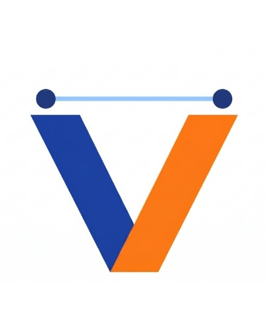
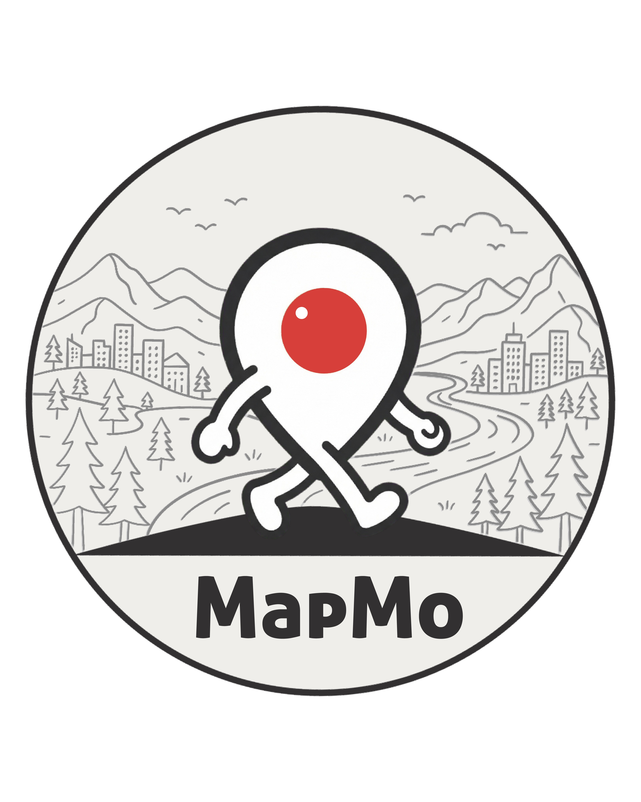
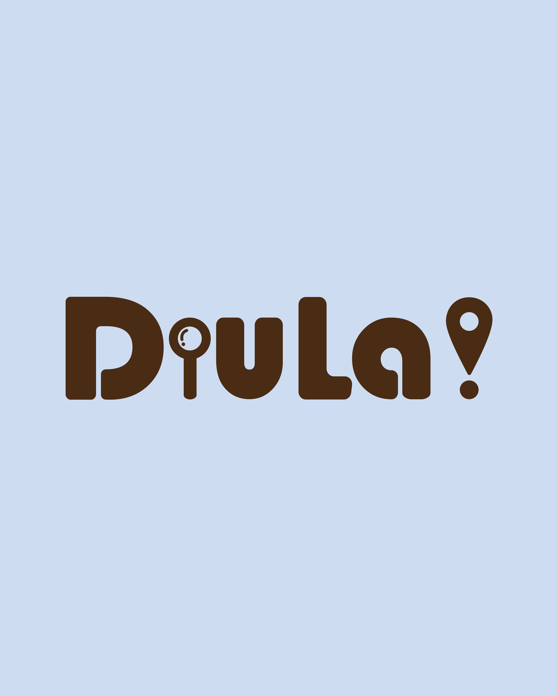
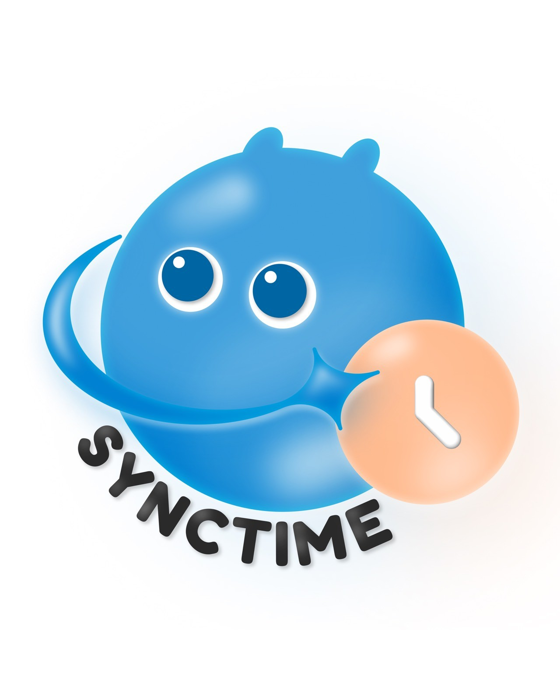
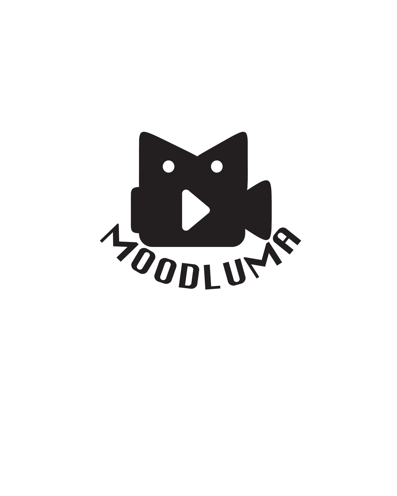
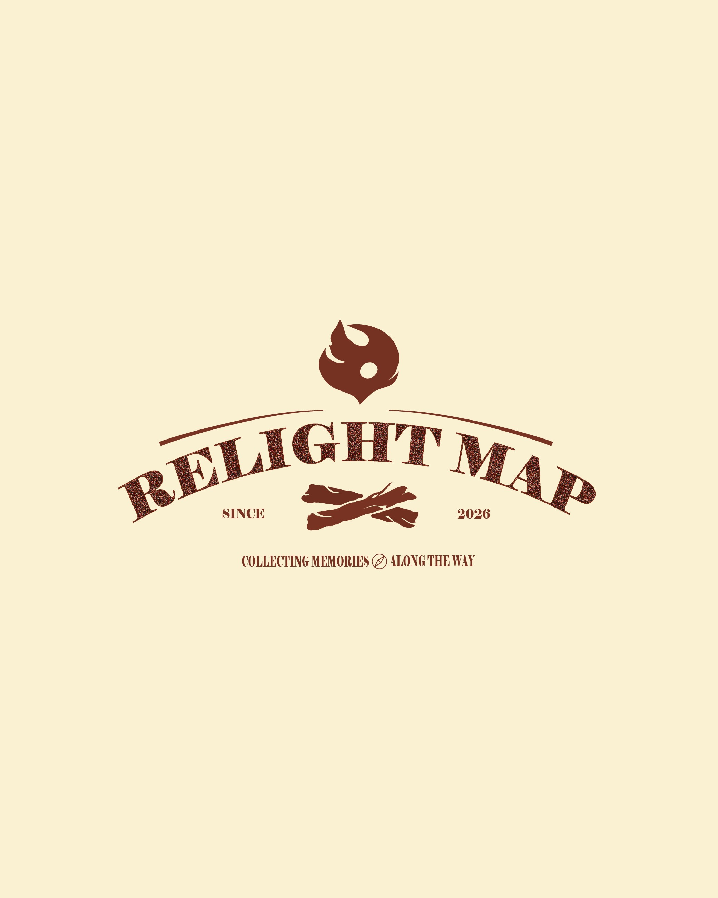
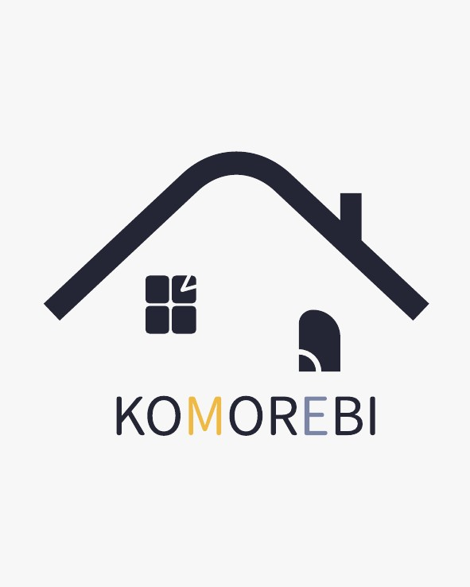
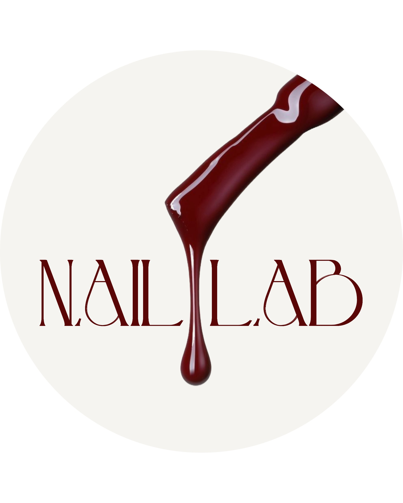
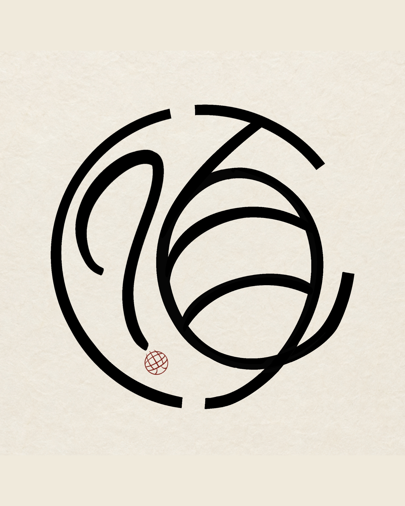
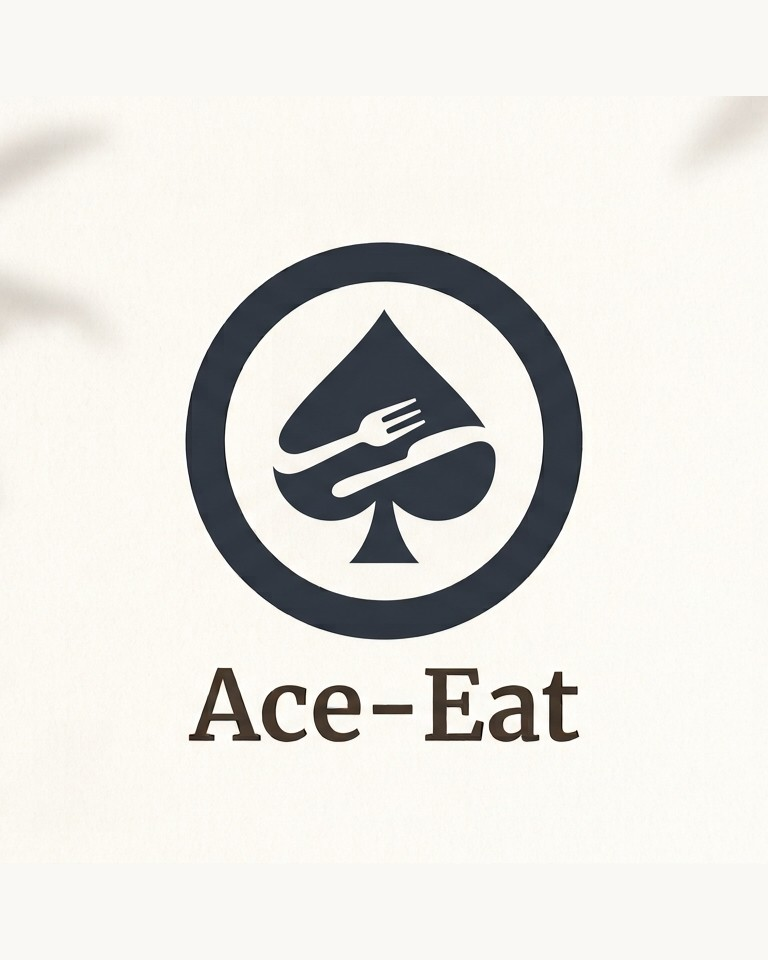

SPECIMEN
樣本
象徵從大量資訊與可能性之中， 被挑選、保存並展示的內容。
01
INFORMATION OVERLOAD
我們每天都被大量資訊包圍。一則貼文、一段影像、 一個被推送的答案，都可能在短短幾秒內進入我們的視線。
我們不斷觀看、滑動、停留，也不斷忽略、篩選與離開。 在看似無限的資訊之中，我們所留下的每一個內容， 其實都反映了自己的理解、偏好與價值判斷。
你選擇看見什麼，
也正在決定你如何理解這個世界。
02
GENERATIVE AI
生成式 AI 的出現，讓文字、影像、聲音與各種內容， 都能以前所未有的速度被創造。
當產出變得快速且大量，創作本身不再稀缺。 我們面對的問題也不再只是「能不能做出來」， 而是「我們為什麼選擇這一個？」
AI 可以提供無數種答案
卻無法替人決定哪一個真正重要。
真正賦予內容價值的，
仍然是人的觀察、判斷、篩選與詮釋。
03
THE MEANING OF SPECI⁺
SPECIMEN
象徵從大量資訊與可能性之中， 被挑選、保存並展示的內容。
SPECIAL
代表每一件作品都承載著創作者不同的觀點、 判斷與價值選擇。
PLUS
象徵在 AI 協作與跨領域整合之後， 作品持續產生的加值與延伸可能。
每一件被留下的作品，
都是一份經過選擇的獨特樣本。
04
SIX CORE CONCEPTS
每一件作品，都是創作者經過選擇後留下的獨特樣本。
從大量資訊中建立自己的理解、立場與判斷。
透過影像、文字、設計、網站與數位媒介， 將想法轉化為可以被看見的形式。
對資訊進行整理、篩選、編排與加值， 建立內容之間的關係。
讓作品不只是單向呈現，而是與觀眾產生交流與連結。
象徵 AI 協作、跨域整合與數位創新所帶來的延伸可能。
05
A HUMAN-CURATED SPACE











《人擇空間》代表一個由「人」主導的創作與觀看場域。 展覽集結十三組不同形式的專題作品，內容涵蓋 AI 模型、 APP、網站、影音、互動平台、數位服務與行銷企劃。
這些作品的形式與議題各不相同，但每一組都經歷了 觀察問題、整理資訊、理解需求、做出判斷， 最後選擇一種方式呈現的過程。
這裡展示的不只是開始探索作品 ↘
「我們做出了什麼」，
更希望讓觀眾看見：
我們為什麼選擇這樣做。
PROJECTS / 13 GROUPS
11
在資訊、創意與執行之間建立秩序，是專案經理的核心任務。 負責統籌展覽方向、整合各組資源與推動專案進程， 將分散的想法轉化為具體行動。透過持續協調與決策， 讓《Speci⁺＿人擇空間》不只是各組成果的集合， 而是一個由選擇、連結與合作共同構築的完整空間。
Instagram ↗從品牌視覺到社群內容，從行銷推廣到合作洽談， 我們負責打造 Speci 與外界溝通的每個環節。 透過時尚雜誌的編輯視角，將設計、美感與文化觀察 融入內容之中，創造屬於 Speci 的品牌聲音。
徐偉然 Instagram ↗ 李承昕 Instagram ↗負責記錄畢展從準備到展出的過程。當大家忙著做專題時， 我們拿相機扛器材到處跑，從會議、製作過程到展覽現場， 把大家的努力記錄成影片和照片，讓更多人看見畢展背後的故事。
李家綸 Instagram ↗ 阮雙香 Instagram ↗從網站開發到互動體驗，從系統建置到技術整合， 負責將創意與想法轉化為可被實現的數位體驗。 透過程式開發、互動設計與新興科技應用， 打造 Speci 的核心運作架構，讓每一個故事與角色 都能以最完整的形式呈現在觀展者眼前。
Instagram ↗本次畢業展也特別納入「無障礙導覽員」規劃， 成為世新大學資訊傳播學系首度設置無障礙導覽服務的畢業展。 過去，部分身心障礙觀眾在參觀展覽時，可能因資訊接收受限 而僅能短暫停留，較難完整理解各組作品所欲傳達的理念與內容。 為此，本次展覽特別製作由我錄製的各組主題導覽音檔， 提供身心障礙觀眾聆聽，協助他們更全面地認識每個小組的 創作理念與展覽資訊。透過無障礙導覽服務，不僅提升觀展體驗 與資訊近用的平等性，也讓展覽展現更多包容精神與人文關懷。
Instagram ↗